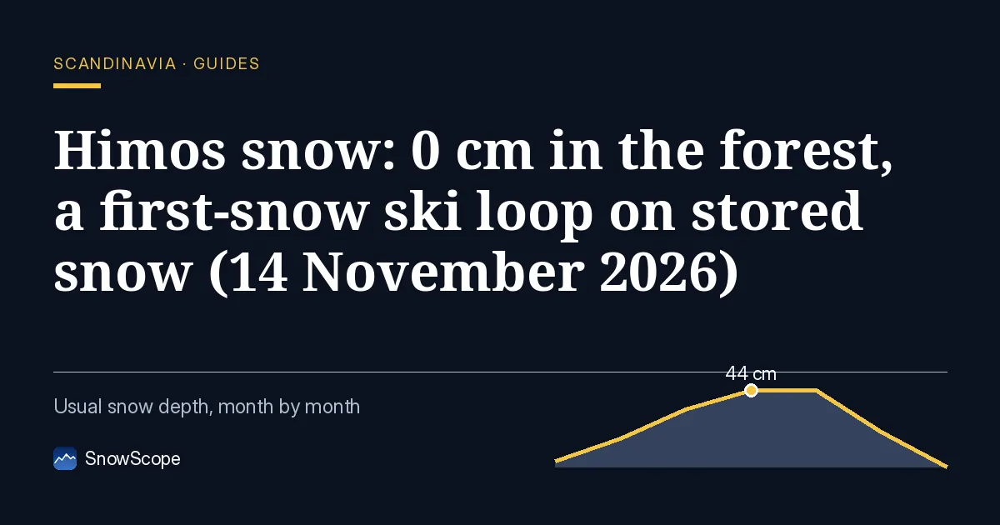

Himos snow: 0 cm in the forest, a first-snow ski loop on stored snow (14 November 2026)
Southern Finland has no natural snow to speak of. On the morning of 13 November the weather stations around Himos measured 0 cm at Halli airport (143 m, 26 km away), 0 cm at Jyväskylä Muuratjärvi and Joutsa, and 2 cm at Hyytiälä, further west. Himos is still opening something this weekend: a first-snow cross-country loop on 14 November, built from snow the resort prepares itself rather than from this week's snowfall. The slopes themselves have no opening date yet.
See the live snow forecast for Hiihtokeskus Himosvuori in the SnowScope appSnow depth, powder alerts and the 3D map, free.

The loop, not the hill
Himos's opening-hours page says the start of the slope season depends on the weather and that the date will be announced when it is confirmed. The cross-country loop is a different thing: it is laid with prepared snow, which is why it can open while the forest around is brown.
Our estimate of new snow over the last seven days is about 2 to 3 cm, which has not stayed on the ground.

This week: more rain than snow
We expect about 2 to 3 cm of snow over the next seven days. The other forecasts we check give between 4 and 30 cm at the top of the hill, a very wide range, and they agree that more than half of the water at the base falls as rain. The snow line sits around 220 m, almost the height of the summit (230 m). Expect sleet and rain, with snow only in the colder hours.
Normal in Jämsä
Our 46 past winters give Himos a usual natural depth of 2 cm on 14 November and 8 cm on 30 November; 39 % of winters have no snow on 14 November. The base usually builds only in December, to 16 cm by 15 December. A middle winter peaks at 54 cm.
The number of snow days has fallen: 160 in a middle winter of the first 15, 139 in the last 15. Last winter had only 84.
When to come
For skiing on the hill, wait for the resort's announcement of the opening date. For cross-country now, the first-snow loop is the only real option in the area.
Tips for skiers
- First-snow loops are short: expect laps, not a tour.
- Rain on frozen ground makes car parks and paths very slippery in the morning.
- Watch himos.fi for the opening date; it depends on a run of cold nights for snowmaking.
More maps (external sites)
References and credits
- Finnish Meteorological Institute, open data (CC BY 4.0) en.ilmatieteenlaitos.fi/open-data
- Himos, opening hours (official), read 2026-11-13 himos.fi/aukioloajat/
About these numbers
Measured snow: morning readings of 13 November 2026 at the official weather stations of Sweden (SMHI open data), Finland (FMI open data, CC BY 4.0) and Norway (MET Norway station reports, CC BY 4.0, as published by Ogimet). Norway's national snow map seNorge (NVE and MET Norway, NLOD) gives the estimates on a 1 km grid for the slopes. Our numbers: SnowScope's forecast for the next seven days at three heights of the ski area, compared with independent forecasts (ECMWF, ICON, GFS, GEM) for 14 to 20 November; snow history of 46 past winters (1980-81 to 2025-26), a model of the past corrected for height. Opening dates: the resorts' own pages, read on 13 November 2026. Run length and lift count: OpenSkiMap mapping.
Official avalanche bulletins: EAWS – European Avalanche Warning Services
Cite this report
For research, teaching or the press: the numbers and charts are free to reuse under CC BY 4.0 with this citation.
SnowScope (2026), Himos snow: 0 cm in the forest, a first-snow ski loop on stored snow (14 November 2026), https://snowscope.app/blog/en/2026/11/himos-snow-14-november-2026.html, accessed 2026-11-14
SnowScope (Atlas Labs). (2026, November 14). Himos snow: 0 cm in the forest, a first-snow ski loop on stored snow (14 November 2026). SnowScope snow reports. https://snowscope.app/blog/en/2026/11/himos-snow-14-november-2026.html
BibTeX
@misc{snowscope2026himossnow14november2026,
author = {{SnowScope (Atlas Labs)}},
title = {Himos snow: 0 cm in the forest, a first-snow ski loop on stored snow (14 November 2026)},
year = {2026},
month = nov,
howpublished = {\url{https://snowscope.app/blog/en/2026/11/himos-snow-14-november-2026.html}},
note = {Published 2026-11-15 09:34 UTC; accessed 2026-11-14}
}· CC BY 4.0 · Methods, data and tools →
Hiihtokeskus Himosvuori: snow and temperature by height, this winter vs last (tools) →
Follow Hiihtokeskus Himosvuori
Free: a message when fresh snow is coming, and the forecast every morning.
More snow reports

Cauterets offers 25 km of runs for 46 EUR, but our snow history shows that the best chance for cover is the last week of December.

Boí Taüll starts at 2039 m and beats Baqueira Beret on day-pass price, though early December snow still takes some patience.

Planning a December trip to Baqueira Beret? See our snow history, ticket prices starting at 70,00 € for a 1-day pass, and how it compares to Astún-Candanchú.